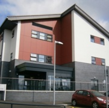

(PUPIS)
At Swansea Bay University Health Board, we have a multidisciplinary team of specialist nurses and engineers dedicated to supporting local healthcare services in the prevention and management of pressure ulcers. The team utilises specialised assessment tools and bespoke pressure-relieving equipment to enhance patient care.
The Rehabilitation Engineering department is an ISO 13485 certified manufacturer with in-house manufacturing facilities.
Click here to learn more about PUPIS.
